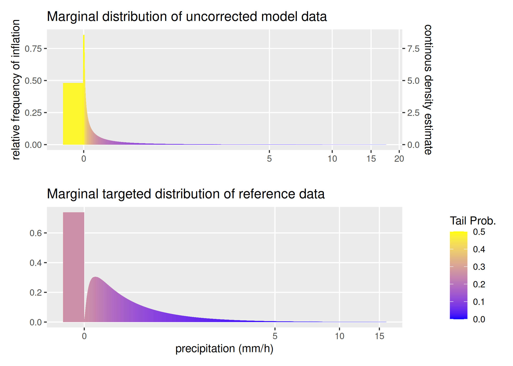

Vine Copula Bias Correction for partially zero-inflated margins (VBC) is a multivariate bias correction methodology anchored in vine copula theory. For this method, we generalized the margins, the copula and the vine copula density to accommodate mixture distributions and propose an extension to the Rosenblatt transform that can handle non-continuous pseudo observations. The proposed method is tailored to model dependencies between heavy tailed, zero-inflated and continuous climate variables with high temporal resolution, ensuring precise corrections. Notably, our approach is designed for high interpretability, enabling control and assessment of the results.
Installation
You can install the development versions for zero inflation from kde1d and rvinecopulib before installing the development version of VBC from GitHub with:
# prerequisits
remotes::install_github("vinecopulib/rvinecopulib@pull-zi")
remotes::install_github("tnagler/kde1d@dev")
# without vignette
remotes::install_github("henrifnk/VBC")
# with vignette
remotes::install_github("henrifnk/VBC", build_vignettes = TRUE)Quick Start
We aim to correct CRCM5 climate data for Munich, Germany, for the year 2010. The data is available in the package as climate. We will use the vbc function to correct the data.
library(data.table)
library(ggplot2)
library(knitr)
library(patchwork)
library(VBC)
data("climate")
climate_2010 = lapply(climate, function(data) data[year(time) == 2010, ])Climate data are available in 3-hourly resolution for the variables temperature, precipitation, dew point temperature, radiation and wind speed. The high temporal resolution causes inflation in the variables radiation and precipitation. Visually, check the shape of the marginal distributions of the model data and the reference data using plot_tails. The distance between the two marginal distributions can be quantified using the Wasserstein distance.
plot_tails(climate_2010$mp, "pr", scale_d = 0.1, mult = 4, xmin = 0) +
labs(x = "", title = "Marginal distribution of uncorrected model data") +
theme(legend.position = "none") +
plot_tails(climate_2010$rp, "pr", scale_d = 1, mult = 4, xmin = 0) +
labs(x = "precipitation (mm/h)",
title = "Marginal targeted distribution of reference data") +
scale_y_continuous(name = "") +
plot_layout(ncol = 1) 
wd_pre = calc_wasserstein(climate_2010$mp[, "pr"], climate_2010$rp[, "pr"])
wd_pre
#> Wasserstein_1 Wasserstein_2
#> 0.05947432 0.21964470For the correction, we need to specify the type of margins and their limits. "zi" defines a univariate margins and "c" a strictly continuous margin. xmin specifies the lower bound of the margins. For the vine copula modeling, we use the TLL family set with no truncation on the vine.
We can then visually and quantitatively asses the correction in mp_vbc by comparing the corrected data and the reference data by plotting the tails and calculating the Wasserstein distances. The results can be compared to those above.
plot_tails(round(mp_vbc, 3), "pr", scale_d = 1, mult = 3, xmin = 0) +
labs(x = "precipitation (mm/h)",
title = "Marginal distribution of corrected model data")Visibly, the correction shortens the heavy tail and increases the density inflation at zero. This is also reflected in the Wasserstein distance.
wd_post = calc_wasserstein(climate_2010$rp[, "pr"], mp_vbc[, "pr"])
kable(data.frame("Wasserstein_Uncorrected" = wd_pre,
"Wasserstein_Corrected" = wd_post,
"Improvement" = wd_pre - wd_post,
"Improvement_in_Perc" = (wd_pre - wd_post) / wd_pre * 100),
digits = 2)| Wasserstein_Uncorrected | Wasserstein_Corrected | Improvement | Improvement_in_Perc | |
|---|---|---|---|---|
| Wasserstein_1 | 0.06 | 0.02 | 0.04 | 61.41 |
| Wasserstein_2 | 0.22 | 0.08 | 0.14 | 63.71 |
Further we can quantify the multivariate improvement of our correction in terms of the Wasserstein distances.
wd_mvd_post = calc_wasserstein(climate_2010$rp[, -"time"], mp_vbc)
wd_mvd_pre = calc_wasserstein(climate_2010$rp[, -"time"],
climate_2010$mp[, -"time"])
iprovement = wd_mvd_pre - wd_mvd_post
kable(data.frame("Wasserstein_Uncorrected" = wd_mvd_pre,
"Wasserstein_Corrected" = wd_mvd_post,
"Improvement" = iprovement,
"Improvement_in_Perc" = iprovement / wd_mvd_pre * 100),
digits = 2)| Wasserstein_Uncorrected | Wasserstein_Corrected | Improvement | Improvement_in_Perc | |
|---|---|---|---|---|
| Wasserstein_1 | 0.66 | 0.37 | 0.28 | 43.21 |
| Wasserstein_2 | 0.95 | 0.48 | 0.47 | 49.66 |
Citation
If you use VBC in a scientific publication, please cite it as:
Funk, H., Ludwig, R., Kuechenhoff, H., & Nagler, T. (2024). Towards more realistic climate model outputs: A multivariate bias correction based on zero-inflated vine copulas. arXiv preprint arXiv:2410.15931.BibTeX: